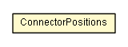

org.settings4j
Class ConnectorPositions

java.lang.Object
 org.settings4j.ConnectorPositions
org.settings4j.ConnectorPositions
public final class ConnectorPositions
- extends Object
ConnectorPostitions used for Settings4jInstance.addConnector(Connector, ConnectorPosition).
Exampe Usage:
--------------------------------------
Connector myConnector = ...
if (Settings4j.getSettings().getConnector(myConnector.getName()) == null) {
Settings4j.getSettings().addConnector(myConnector, ConnectorPositions.firstValid(//
ConnectorPositions.afterLast(SystemPropertyConnector.class),
ConnectorPositions.atFirst() // fallback if no SystemPropertyConnector exists.
)
);
}
--------------------------------------
It is even more readable with static import:
--------------------------------------
import static org.settings4j.ConnectorPositions.*;
..
Connector myConnector = ...
if (Settings4j.getSettings().getConnector(myConnector.getName()) == null) {
Settings4j.getSettings().addConnector(myConnector, //
firstValid(afterLast(SystemPropertyConnector.class), atFirst())
);
}
--------------------------------------
- Author:
- brabenetz
| Methods inherited from class java.lang.Object |
clone, equals, finalize, getClass, hashCode, notify, notifyAll, toString, wait, wait, wait |
before
public static ConnectorPosition before(String connectorName)
- Parameters:
connectorName - The Connector.getName() to search for.
- Returns:
ConnectorPositionBeforeName
beforeFirst
public static ConnectorPosition beforeFirst(Class<? extends Connector> connectorClass)
- Parameters:
connectorClass - the connector class to search in the given connectors list.
- Returns:
ConnectorPositionBeforeFirstClass
beforeLast
public static ConnectorPosition beforeLast(Class<? extends Connector> connectorClass)
- Parameters:
connectorClass - the connector class to search in the given connectors list.
- Returns:
ConnectorPositionBeforeLastClass
after
public static ConnectorPosition after(String connectorName)
- Parameters:
connectorName - The Connector.getName() to search for.
- Returns:
ConnectorPositionAfterName
afterFirst
public static ConnectorPosition afterFirst(Class<? extends Connector> connectorClass)
- Parameters:
connectorClass - the connector class to search in the given connectors list.
- Returns:
ConnectorPositionAfterFirstClass
afterLast
public static ConnectorPosition afterLast(Class<? extends Connector> connectorClass)
- Parameters:
connectorClass - the connector class to search in the given connectors list.
- Returns:
ConnectorPositionAfterLastClass
atFirst
public static ConnectorPosition atFirst()
- Returns:
ConnectorPositionAtFirst which always returns an valid position.
atLast
public static ConnectorPosition atLast()
- Returns:
ConnectorPositionAtLast which always returns an valid position.
firstValid
public static ConnectorPosition firstValid(ConnectorPosition... connectorPosition)
- Parameters:
connectorPosition - the ConnectorPositions to search for a valid position.
- Returns:
- ConnectorPositionFirstValid
Copyright © 2008–2014. All rights reserved.